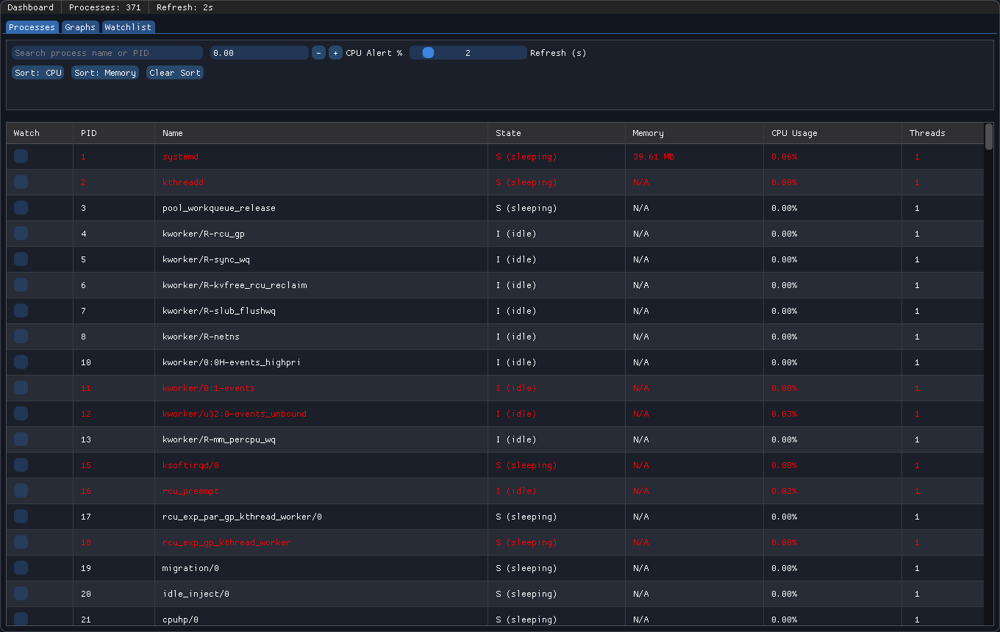
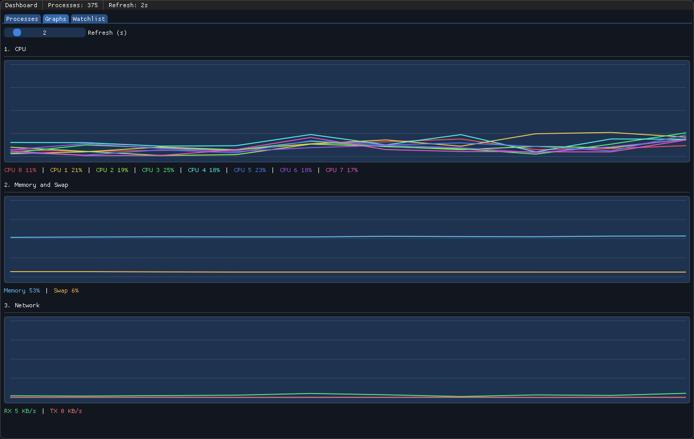
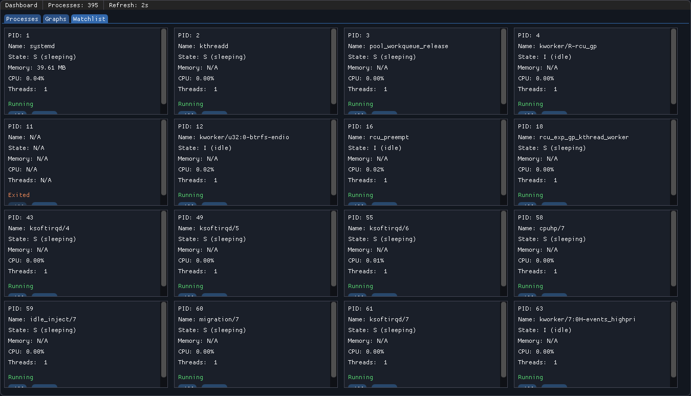

PulseScope gives operators and developers immediate insight into CPU and memory behavior, active process load, and watchlist alerts — from a single tight dashboard.
| PROCESS | PID | CPU% | MEM | STATE |
|---|---|---|---|---|
| nginx | 1042 | 2.1 | 48 MB | RUNNING |
| postgres | 2291 | 18.4 | 512 MB | HIGH |
| node | 3811 | 94.2 | 1.1 GB | WATCH |
| sshd | 921 | 0.0 | 6 MB | SLEEP |
| systemd | 1 | 0.3 | 12 MB | RUNNING |
Everything you need, nothing you don't. PulseScope exposes the right signals at the right moment.
Live process and system status from a single cockpit. One glance tells you everything you need for faster triage.
Track trend shifts over time. Catch pressure build-up before it becomes an incident with rolling CPU and memory charts.
Pin critical workloads. Keep an always-on eye on key PIDs and receive in-app alerts when thresholds are crossed.
Kill, renice, or inspect processes without leaving the UI. Actions are applied immediately with root-level precision.
Sub-millisecond metric refresh pulled directly from /proc. No polling lag, no stale data — just the current truth.
Built in C++ with OpenGL rendering. PulseScope uses under 0.1% CPU itself, so monitoring never becomes the bottleneck.

Unified view for process load, CPU, memory, and active host health in one cockpit.

Track CPU and memory trends over time. Catch pressure build-up before it becomes an incident.

Pin critical workloads and keep an always-on eye on key process behavior.
A practical, repeatable flow for local diagnostics and live incident response.
Build with CMake and launch the binary. PulseScope connects instantly with real host metrics via /proc.
Use process and graph views to isolate sudden CPU or memory anomalies before they cascade.
Prioritize watchlisted processes and respond instantly with in-app kill, renice, or inspect controls.
Dark by design. Mono by default. Zero-friction process intelligence.